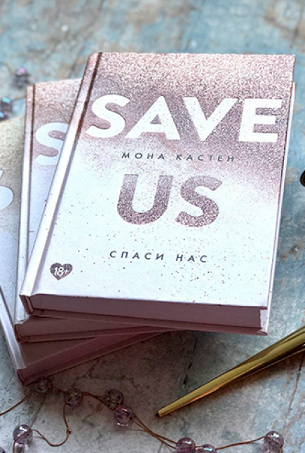

Love, passion, affection - Ruby Bell fears it all like fire. All she has to do is graduate from Maxton Hall, one of the most prestigious schools in England, and get away. Relationships are not part of her plans! But how do you survive on your own when you're an ordinary girl and everyone around you is an arrogant upstart? Ruby especially doesn't like James Beaufort. He's too confident, too attractive, too dangerous. In her right mind she would never associate with him, but fate has other plans. Soon Ruby's life will be irrevocably changed.
Ruby Bell is devastated. James won her heart and then just broke it - smashed it to pieces. But what if it wasn't James' fault? Well no, she'd seen it all with her own eyes: the pool, the naked bodies, the kiss. Besides, he's the one who chased her away!Ruby wants to forget about the spoiled world of Maxton Hall and that terrible day when she was betrayed, but her feelings prevent her from doing so. Her intuition tells her it's not as simple as it might seem at first glance. So what will she choose: Run away or fight for her love?
They are from different worlds. And yet they are meant for each other.Ruby and James thought they had overcome all the obstacles to happiness, but they haven't. Now they have to protect their relationship from friends and family. Disaster seems inevitable, they will never be together again, but salvation comes from James' mum. She leaves a clue... A clue that only he can unravel.
